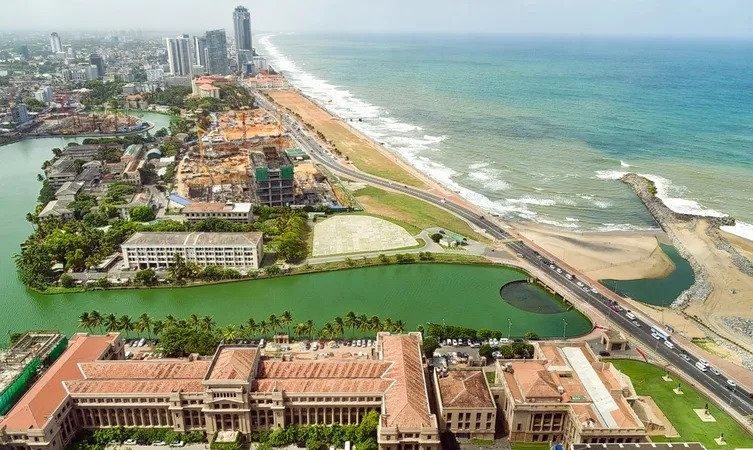
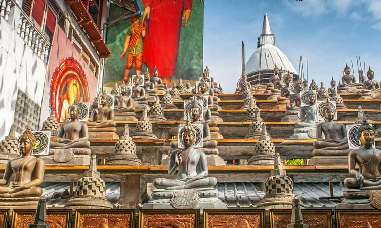

The earliest written mention of the port may be that of Faxian, a Chinese traveler of the 5th century CE who referred to the port as Gaolanbu. The Sinhalese called the port Kolamba, which the Portuguese thought was derived from the Sinhalese word for mango trees (kola, “leaves,” and amba, “mango”). A more likely explanation is that kolamba was an old Sinhalese word meaning “port” or “ferry.”
COLOMBO

A beautiful stretch of open space sandwiched between the bustling Galle road and the Indian Ocean, Galle Face Green is one of the most popular picnic attractions in Colombo. The place received considerable footfall, especially on weekends when there are countless vendors around, tempting the little ones with all kinds of toys..
Galle Face Green

One of the most popular Buddhist temples in Colombo, the Gangaramaya Temple is known for its tranquil surroundings and serene atmosphere. The temple sports exceptionally beautiful architecture and is located on the banks of the famous Beira Lake. On the opposite side of the lake, are several statues and intricate carvings that mark the majestic entrance to the temple...
Gangaramaya Temple
Mount Lavinia Beach is located just out of the Colombo city. This beach strip has a lot to offer for the locals as well as the tourists visiting Colombo. Along the beach there are many nice restaurants pubs as well as relaxing areas. As a tourist who is visiting Colombo, Mount Lavinia Beach is a must visit. The weekends could be crowded with locals though, during the week it is relaxing and peaceful. If you would relax at a pool overlooking the ocean or the sunset.